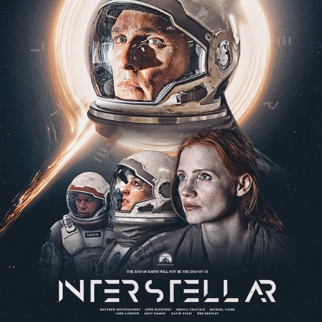

Christopher Nolan · 2019 · Ficção Científica/Aventura/Drama
Em um futuro em que a Terra enfrenta uma grave crise ambiental, o ex-piloto e engenheiro Cooper é recrutado para participar de uma missão espacial em busca de um novo planeta habitável para a humanidade. Ao atravessar um buraco de minhoca, ele e sua equipe exploram mundos desconhecidos enquanto Cooper enfrenta o difícil dilema entre salvar a humanidade e voltar para sua família.